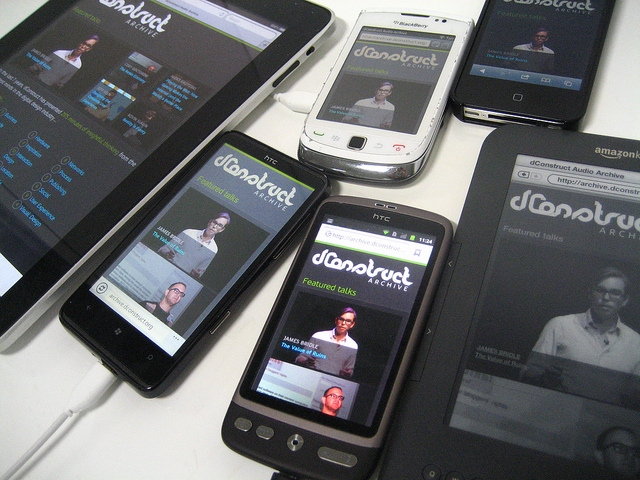

Shot 2 - El viaje de las interfaces nativas

Distintos dispositivos. Por Jeremy Keith
La batalla por la interfaz sigue vigente. Cada plataforma ofrece su interfaz y nos vuelve adictos a su disposición, arquitectura y elementos.
Hace dos días un amigo me enseño un proyecto multiplataforma y me mostró la misma vista en Windows Phone y en Android. Acostumbrado a Android, su navegación por Tabs hizo que de un vistazo, supiera la estructura de la aplicación. En cambio, en Windows Phone y su navegación Panorama, tuve que dar dos vueltas para ser consciente de la misma estructura.
De ninguna manera se puede afirmar que una es mejor que otra, pero en mi caso, puedo afirmar que mi curva de aprendizaje para esa aplicación en Android fue el doble de rápida que en Windows Phone.
Interfaces nativas
Ya tuvimos un debate en el grupo de UXers en Facebook sobre el uso de elementos nativos o unos universales (Interfaz universal contra interfaz propia).
Todas las plataformas nos ofrecen guías para desarrollar y diseñar aplicaciones.* La ventaja de seguirlas es que los usuarios aprenderán más rápido a utilizar la aplicación que con controles universales o propios de otra plataforma*. Por supuesto, la curva de aprendizaje variará en función de la arquitectura de la aplicación.
Por el contrario podemos pensar que para un usuario es mejor tener la misma interfaz en las distintas plataformas. De esta manera cuando pasemos de una a otra, el usuario no notará cambio alguno.
Este punto de vista facilitaría al usuario el primer contacto con la aplicación en otra plataforma, pero cuando se habituara al estilo de la nueva plataforma, la aplicación ya no le sería tan intuitiva como antes. Por ello es bueno que aprovechemos las guías y controles de cada plataforma sin perder la esencia de la aplicación.
Recursos
Os dejo el enlace de las distintas guías de desarrollo: